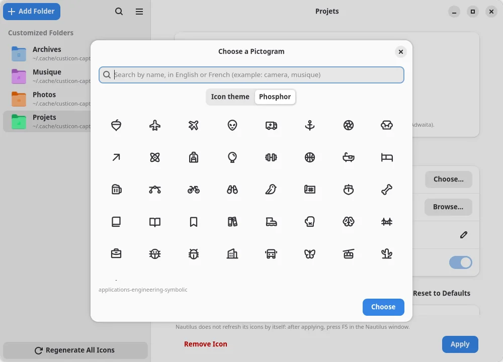
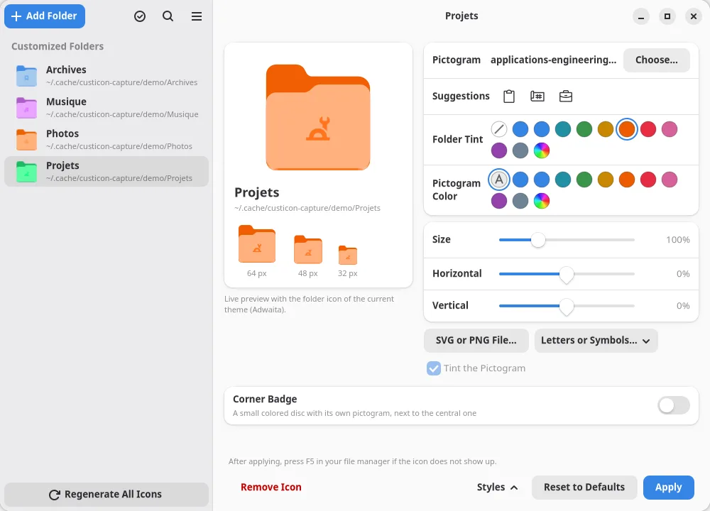

Choose
Over 6,000 pictograms: 1,500 Phosphor icons, 1,600 emoji and 3,400 brand logos, plus your icon theme, your own SVG or PNG file or a few letters. Suggestions follow the folder name.
English · Français

A pictogram on the icon of your folders, in your desktop environment.
Free software for Linux, available in English and French.
Your desktop environment shows the Documents, Music and Pictures folders with a small pictogram in the middle. Custicon lets you do the same for any folder.
The pictogram sits on the real folder icon of your current icon theme, not on an imitation, so the result follows your theme. Change theme, and one action updates every icon. You can also tint the folder itself.
Over 6,000 pictograms: 1,500 Phosphor icons, 1,600 emoji and 3,400 brand logos, plus your icon theme, your own SVG or PNG file or a few letters. Suggestions follow the folder name.
Pick the color in a palette, then set the size and position. Drag the pictogram on the preview and scroll to resize it.
Give the folder itself any color, or the accent color of your system. The light and dark areas of the folder are kept.
Customize several folders at once, with the same pictogram and the same look, or tick folders in the list to restyle them together.
After a change of theme or accent color, one click updates every icon you made.
Add a small colored disc with its own pictogram in a corner of the folder, next to the central one, or on its own: a lock, a check mark, a star.
Save your folders, styles and favorites in one file, and restore them in one click on any computer.
GNOME, KDE Plasma, Cinnamon, MATE or LXQt: the right method is chosen for you, and Dolphin refreshes the icon by itself.
The content of your folders is never touched. The icon lives in metadata that your file manager reads, or in a small hidden file with KDE Plasma and LXQt, removed with the icon. A removed icon gives the folder back exactly the one it had.
Three steps, and the folder is yours.

Search your icon theme, Phosphor, emoji or logos, in English or French.

Tint the folder from the palette, then set the size and the position of the pictogram.
One click, then press F5 in your file manager if the icon does not show up.
Fedora, Linux Mint, Pop!_OS and many other distributions ship Flatpak already. On Ubuntu and a few others, follow the official guide for your distribution first, then restart your session.
Click the button below and open the file with the Software app, or run this command:
flatpak install --user https://gor3pig.github.io/Custicon/custicon.flatpakrefCusticon is updated like your other apps: the Software app offers each new version, and every update is signed.
Custicon asks for access to your home folder, to see the real location of your folders. It never modifies their content and has no network access.
Custicon runs on any Linux distribution that supports Flatpak, with the GNOME, Cinnamon, MATE, KDE Plasma or LXQt desktop environment, on a 64-bit Intel or AMD PC. There is no version for Windows, macOS or ARM devices.